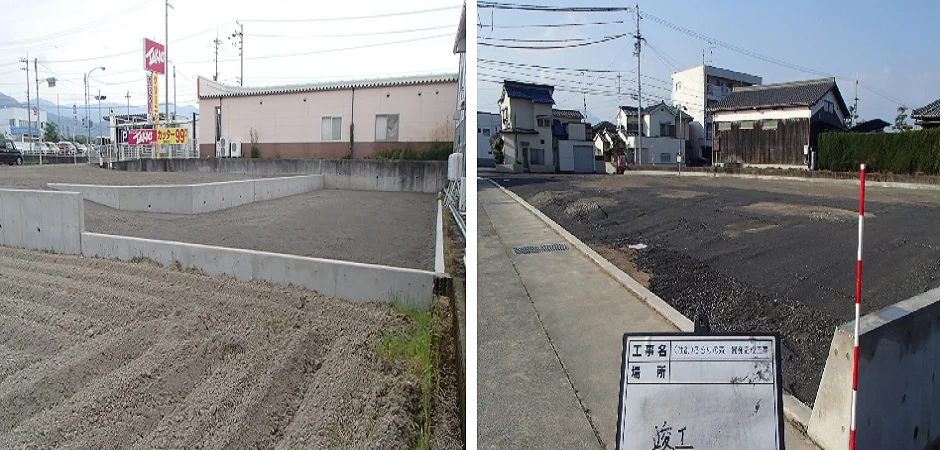
01
開発・造成
土地の開発・造成に関する工事に対応します。
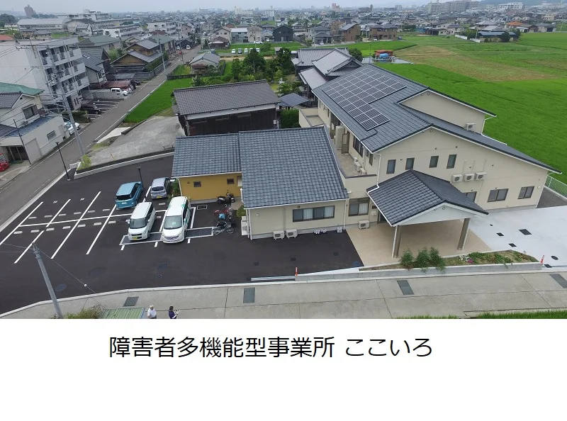
参考サイト掲載写真昭和39年、松山市元町から。
建築・さく井・解体など幅広い工事。
強固な社会基盤の構築に貢献。
01 — OUR BUSINESS
土地づくりから、建物、暮らしのまわりまで。
さまざまな工事のご相談にお応えします。

土地の開発・造成に関する工事に対応します。
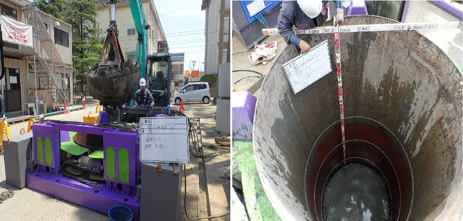
機械を用いた井戸の掘削工事を行います。
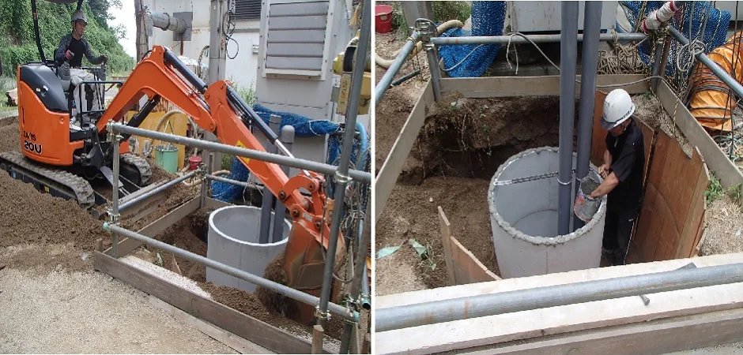
人力による井戸の掘削工事を行います。
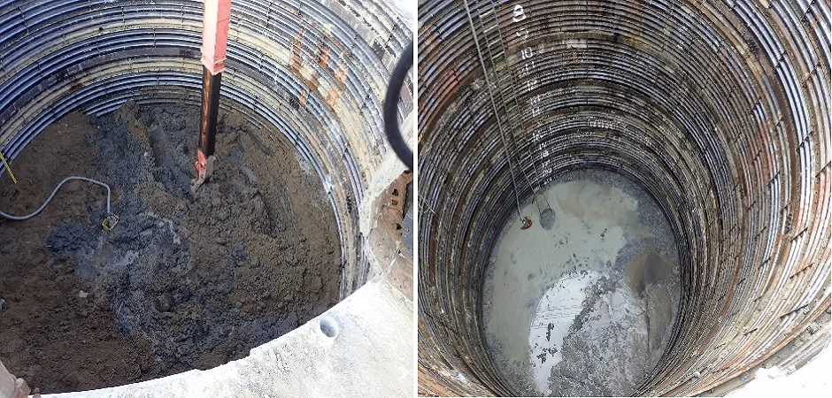
ライナー立坑の施工に対応します。
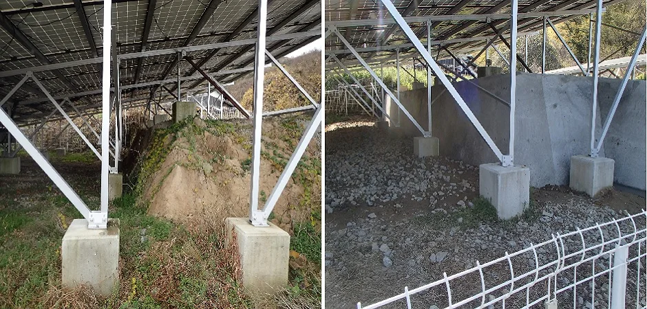
土木工事の一つとして、擁壁の施工を行います。
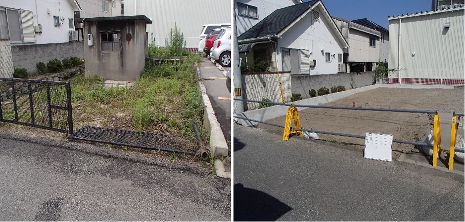
建物などの解体工事に対応します。
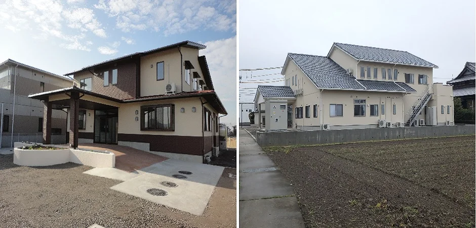
建築に関する工事のご相談を承ります。
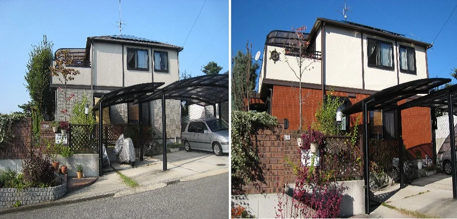
住まいのリフォーム工事に対応します。
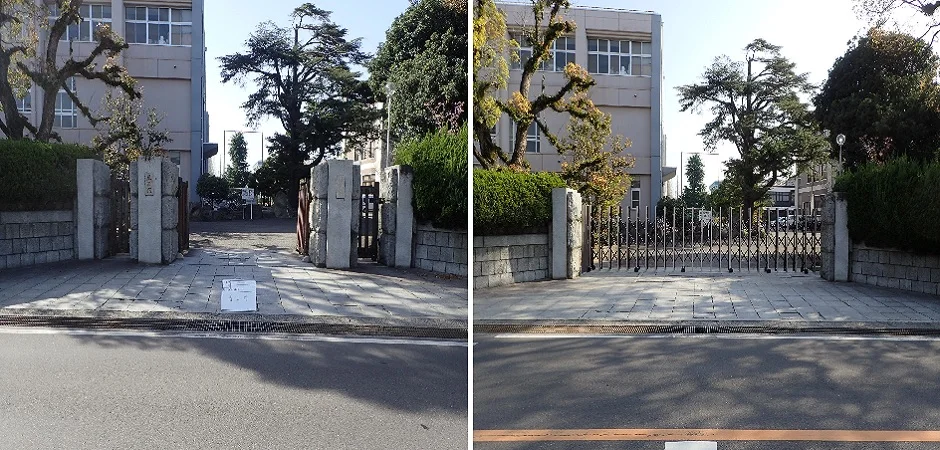
建物の外まわりの工事に対応します。
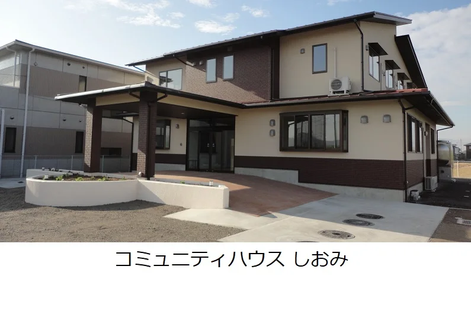
02 — ABOUT US
和田工業の始まりは、昭和39年。
松山市元町で、井戸側と建築ブロックの製造・施工から歩みを始めました。
以来、土木・建築を中心に事業を続け、幅広い工事に取り組んでいます。大切にしているのは、安心・安全で、強固な社会基盤づくりに貢献すること。
工事の規模を問わず、まずはご要望をお聞かせください。
和田工業の歩みを見る03 — OUR WORKS
一つひとつの現場から。
和田工業の仕事を、写真でご紹介します。
写真を選ぶと拡大してご覧いただけます。
04 — OUR HISTORY
井戸側と建築ブロックの製造から、
土木・建築へ。
松山で積み重ねてきた歴史。
松山市元町の現在の本社所在地にて創業。井戸側と建築ブロックの製造・施工を開始しました。
井戸側と建築ブロックの製造工場を、松山市清住の現在の資材置場所在地へ移転しました。
とび・土工工事、さく井工事の建設業許可を登録しました。
土木工事の建設業許可を登録しました。
資本金300万円で、有限会社 和田工業を設立しました。
土木工事、とび・土工工事、さく井工事の建設業許可を登録しました。
建築工事、土木工事、とび・土工工事、さく井工事の建設業許可を登録しました。
LET’S TALK
土木・建築・さく井・解体など、
まずはお気軽にお問い合わせください。
06 — CONTACT
工事のご相談やご質問など、
お問い合わせ内容をご入力ください。
このフォームは表示・操作確認用です。
入力した内容は送信・保存されません。
メールでのお問い合わせ
k.wada.matsuyama@gmail.com